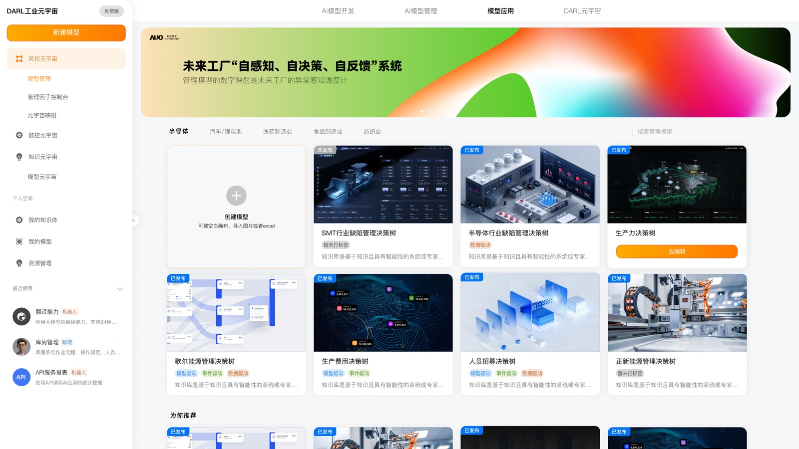

01 / 工业元宇宙 / 2025.05–2025.12
DARL 达尔工业元宇宙 MVP 模式
面向智能制造场景，将 MES、WMS、EPMS 等业务数据与 AI Agent 能力结合，支持关键指标监控、决策分析和流程联动。

01 / 17
业务背景
制造现场的生产、仓储、设备和异常数据分散在不同系统，缺少统一的监控、分析与协同入口。
问题与目标
梳理业务流程与用户任务，明确产品功能边界和迭代方向，完成可进入工厂验证的产品方案。
我的职责
负责产品方案与交互设计，输出产品原型、流程逻辑和交互规范，并协同研发、算法、3D 建模、测试和交付团队推进落地。
关键方案
- 设计“指标管理一张网”，聚合生产、仓储、设备和异常风险信息。
- 设计 AI Agent 交互流程，覆盖异常触发、智能分析、策略建议、人工确认和结果反馈。
- 将数据监控、分析决策与业务流程联动收束到统一体验中。
成果
项目从 0 到 1 完成产品方案与原型落地，进入工厂验证阶段，并支撑多个意向客户的方案沟通。